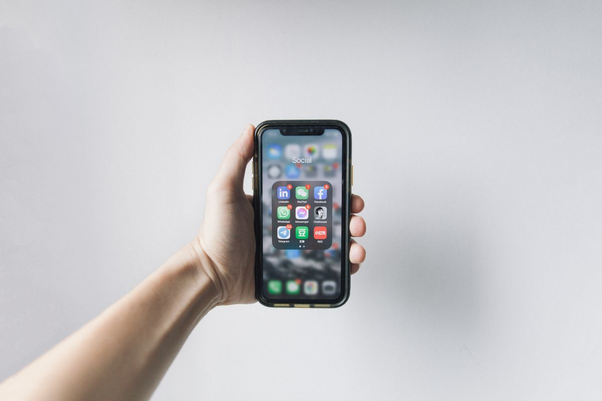

Cara membuat KTP digital (IKD) adalah unduh aplikasi Identitas Kependudukan Digital, isi NIK, email, dan nomor HP, lalu verifikasi wajah. Setelah itu kamu tetap harus datang ke Dukcapil untuk pindai QR Code aktivasi, baru akunmu aktif. Seluruh prosesnya gratis, per November 2026.
Sesudah pindai QR Code di kantor Dukcapil, kode aktivasi dikirim ke email yang kamu daftarkan, lalu kamu memasukkan kode itu ke aplikasi dan membuat PIN enam digit sebagai kunci akun. Sesudah aktif, aplikasi menyimpan KTP digital, Kartu Keluarga, dan kutipan akta kelahiran dalam satu tempat.
Banyak panduan di internet menulis seolah IKD bisa selesai sepenuhnya dari rumah. Faktanya tidak. Pendaftaran awal memang bisa dari HP, tapi aktivasi final wajib tatap muka dengan petugas. Artikel ini mengikuti alur resmi itu supaya kamu tidak bolak-balik.
IKD adalah versi digital dari KTP elektronik yang tinggal di aplikasi resmi Ditjen Dukcapil Kemendagri. Aturannya ada di Permendagri Nomor 72 Tahun 2022. Alurnya dua tahap: daftar dari HP, lalu aktivasi sekali di kantor Dukcapil.
Apa saja syarat membuat KTP digital?
Siapkan dulu lima hal ini sebelum membuka aplikasi, supaya prosesmu tidak berhenti di tengah jalan. Pertama, kamu sudah pernah perekaman KTP elektronik. Kalau belum pernah rekam sama sekali, IKD tidak bisa dibuat dan kamu wajib ke kecamatan dulu untuk foto dan sidik jari. Kedua, usia minimal 17 tahun, atau sudah menikah meski belum genap 17 tahun. Ketiga, HP Android atau iOS dengan koneksi internet yang stabil. Keempat, alamat email pribadi yang aktif dan benar-benar bisa kamu buka, karena kode aktivasi dikirim ke sana. Jangan pakai email kantor atau email sementara. Kelima, nomor HP aktif atas nama sendiri yang dipakai di perangkat yang sama saat mendaftar.

Bagaimana cara daftar IKD lewat HP?
Pendaftaran awal bisa selesai dari rumah. Ikuti langkah ini berurutan.
- Unduh aplikasi Identitas Kependudukan Digital hanya dari Google Play Store atau App Store. Cek pengembangnya: Ditjen Dukcapil Kemendagri. Aplikasi lain dengan nama mirip bisa jadi palsu.
- Buka aplikasi, lalu pilih menu Daftar atau Registrasi.
- Isi NIK, nama lengkap, tempat dan tanggal lahir, alamat email aktif, dan nomor HP. Periksa lagi ejaan namamu, karena harus sama persis dengan data Dukcapil.
- Tekan tombol Verifikasi Data.
- Lakukan swafoto sesuai petunjuk di layar. Cari ruangan dengan cahaya terang dari arah depan, lepas masker, kacamata, dan topi supaya wajahmu mudah dicocokkan dengan data biometrik yang tersimpan. Kalau gagal, coba lagi di dekat jendela pada siang hari dengan kamera depan yang bersih.
- Kalau verifikasi wajah berhasil, akunmu berstatus menunggu aktivasi. Sampai di sini pendaftaran dari HP selesai, tapi akun belum bisa dipakai.
Kenapa harus datang ke Dukcapil untuk aktivasi?
Ini bagian yang paling sering disalahpahami. IKD tidak bisa aktif sepenuhnya dari rumah, karena petugas harus memastikan orang yang mendaftar memang pemilik identitasnya. Datang ke kantor Dukcapil sesuai domisili, kecamatan, atau Mal Pelayanan Publik, lalu sampaikan bahwa kamu ingin mengaktifkan akun IKD yang sudah didaftarkan lewat aplikasi. Petugas akan menunjukkan QR Code khusus, lalu kamu memindainya dari aplikasi. Siapkan aplikasimu sebelum petugas menampilkannya supaya prosesnya cepat. Sesudah pindai berhasil, sistem mengirim kode aktivasi ke email yang kamu daftarkan. Buka email itu, salin kodenya, masukkan ke aplikasi beserta captcha yang muncul, lalu buat PIN enam digit. PIN ini kunci utama akunmu, jadi pilih yang mudah kamu ingat tapi sulit ditebak orang lain. Sesudah semua tahap selesai, akun IKD resmi aktif dan siap dipakai.

Dokumen apa saja yang tersimpan di aplikasi IKD?
IKD bukan sekadar foto KTP di HP. Sesudah aktif, aplikasi ini menyimpan biodata kependudukan lengkap, KTP elektronik versi digital, Kartu Keluarga, kutipan Akta Kelahiran, Kartu Identitas Anak bila kamu memenuhi ketentuannya, dan Surat Pindah yang sudah tercatat di sistem. Setiap kali membuka dokumen itu, kamu wajib memasukkan PIN sebagai lapisan keamanan tambahan. Aplikasi ini juga punya menu data keluarga, tanda tangan elektronik, pelayanan, dan pemantauan pelayanan, plus fitur pencegahan tangkap layar pada bagian tertentu supaya datamu tidak mudah disebar orang lain. Saat kamu perlu menunjukkan identitasmu, aplikasi menampilkan QR Code dinamis yang hanya berlaku 90 detik, jadi tidak bisa disalin sembarangan. IKD juga mempercepat verifikasi di layanan perbankan, bandara, dan BPJS, jadi ada baiknya kamu juga tahu cara cek BPJS Kesehatan aktif atau tidak lewat HP. Satu catatan penting: simpan baik-baik KTP fisikmu. Untuk sekarang, KTP fisik masih diperlukan di beberapa wilayah atau instansi yang belum punya alat pemindai QR Code IKD.
Bagaimana kalau verifikasi gagal atau lupa PIN?
Empat masalah ini paling sering muncul, dan semuanya ada jalan keluarnya. Pertama, verifikasi wajah gagal. Penyebab paling umum adalah cahaya kurang dan aksesori yang menutupi wajah. Coba lagi di ruangan terang, lepas kacamata dan topi, lalu bersihkan lensa kamera depan. Kedua, kode aktivasi tidak masuk ke email. Tunggu sebentar, periksa folder spam, dan pastikan alamat email yang kamu daftarkan sudah benar. Kalau tetap tidak ada, tanyakan ke petugas di loket sebelum kamu pulang. Ketiga, lupa PIN. Penggantian PIN tidak bisa dilakukan sendiri lewat aplikasi. Kamu harus datang ke Dukcapil, sampaikan maksudmu, siapkan dokumen identitas bila diminta, lalu ikuti arahan petugas sampai PIN baru selesai. Keempat, ganti HP. Akun IKD terikat pada perangkat yang dipakai saat aktivasi. Kalau berganti HP, unduh ulang aplikasinya di perangkat baru, lalu lakukan verifikasi ulang ke Dukcapil supaya hak aksesmu dipindahkan.
Satu peringatan yang wajib kamu ingat: petugas Dukcapil tidak pernah menghubungi warga lewat WhatsApp, telepon, atau media sosial untuk meminta kode aktivasi, biaya tambahan, atau tautan di luar aplikasi resmi. Aktivasi IKD hanya dilayani secara tatap muka di kantor pelayanan resmi, dan seluruh prosesnya gratis. Siapa pun yang meminta kode aktivasimu lewat chat patut dicurigai sebagai penipuan.
IKD belum menggantikan KTP fisik untuk semua keperluan, tapi ia membuat urusan administrasi jauh lebih ringan: satu aplikasi untuk KTP, Kartu Keluarga, dan akta kelahiran, lengkap dengan PIN dan QR Code yang berganti cepat. Daftar dari HP sekarang, lalu sempatkan sekali datang ke Dukcapil untuk aktivasi. Gratis, dan akunmu aktif hari itu juga.
Baca juga: Cara Cek SLIK OJK Online Gratis Lewat HP, Sekalian Pastikan NIK KTP-mu Tidak Dicuri Buat Pinjol, Cara Membuat SKCK Online 2026 Lewat HP, dari Daftar sampai Ambil di Polres, dan Cara Membuat Paspor Online Lewat M-Paspor, dari Daftar sampai Ambil. Kamu juga bisa melihat kumpulan artikel Other dan artikel riset di blog.
Sumber dan Info Resmi
Fakta dan langkah di artikel ini merujuk ke sumber berikut:
- UMSU: syarat daftar IKD, langkah daftar 6 tahap lewat HP, aktivasi dengan pindai QR Code di Dukcapil, kode aktivasi dikirim ke email, PIN sebagai kunci utama akun, lupa PIN hanya bisa reset lewat petugas, akun terikat perangkat, layanan gratis, dan petugas tidak pernah meminta kode aktivasi atau biaya lewat WhatsApp, telepon, atau media sosial.
- Medan Aktual: IKD diatur Permendagri Nomor 72 Tahun 2022, aplikasi tersedia untuk Android dan iOS, fitur data keluarga, dokumen, tanda tangan elektronik, pelayanan, dan pemantauan pelayanan, serta fitur pencegahan tangkap layar pada bagian tertentu aplikasi.
- Legal.biz.id: PIN enam digit, QR Code identitas di aplikasi hanya berlaku 90 detik, menu data keluarga dan dokumen di aplikasi, integrasi IKD dengan BPJS dan perbankan, dan KTP fisik masih diperlukan di beberapa wilayah yang belum punya alat pemindai QR Code IKD.